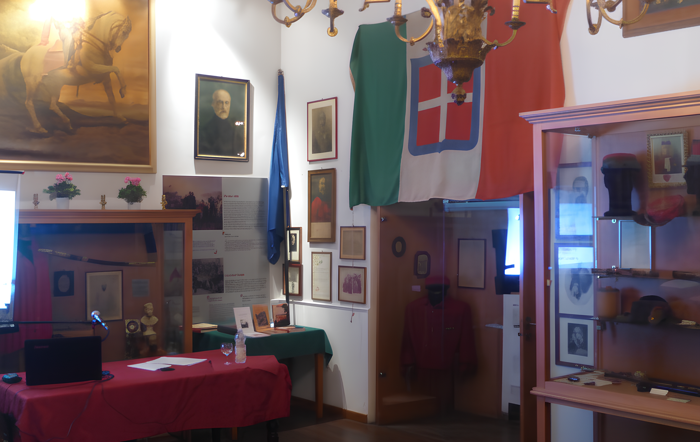

Benvenuti nel Cuore Pulsante del Risorgimento
Il Museo Garibaldino di Genova, situato nel quartiere di Quarto, all'interno della magnifica Villa Spinola (oggi Villa Garibaldi), fu il vero e proprio quartier generale dove Giuseppe Garibaldi, insieme ai suoi uomini, progettò le fasi cruciali della Spedizione dei Mille. Qui, l'Eroe dei Due Mondi trascorse la notte prima della storica partenza.
Un Luogo Iconico: Villa Spinola
La villa del XVII secolo, di proprietà dell'amico e compagno d'armi Candido Augusto Vecchi, fu messa a completa disposizione di Garibaldi. Le sue sale, con splendidi soffitti affrescati, divennero il centro operativo della spedizione. Oggi, il museo occupa due di queste sale, conservando intatta l'atmosfera di quei giorni febbrili. L'edificio è gestito dall'Associazione Nazionale Combattenti e Reduci, che ne preserva la memoria storica.
Le Collezioni: Testimonianze di un'Epoca
Il percorso espositivo raccoglie un'eredità preziosa del periodo garibaldino e risorgimentale. Esplora alcuni dei nostri pezzi più significativi:
Organizza la Tua Visita
Indirizzo
Via L. Sartorio, 1
16148 Genova (Quarto dei Mille)
Apri su Google Maps
Orari di Apertura
Lunedì - Giovedì: 12:00 - 17:00
Venerdì - Domenica: Chiuso
Per tutti gli altri giorni e orari su prenotazione.
Biglietti
Visita gratuita
E' gradito un contributo per la manutenzione del museo.
Contatti
Cellulare: M. Teresa Carrara +39 349 4960 570
Email: mteresa.carrara@fastwebnet.it
Per gruppi numerosi è gradito il preavviso telefonico
Servizi Aggiuntivi
All'interno della Villa è presente un punto di ristoro con un piacevole dehors, gestito dall'associazione